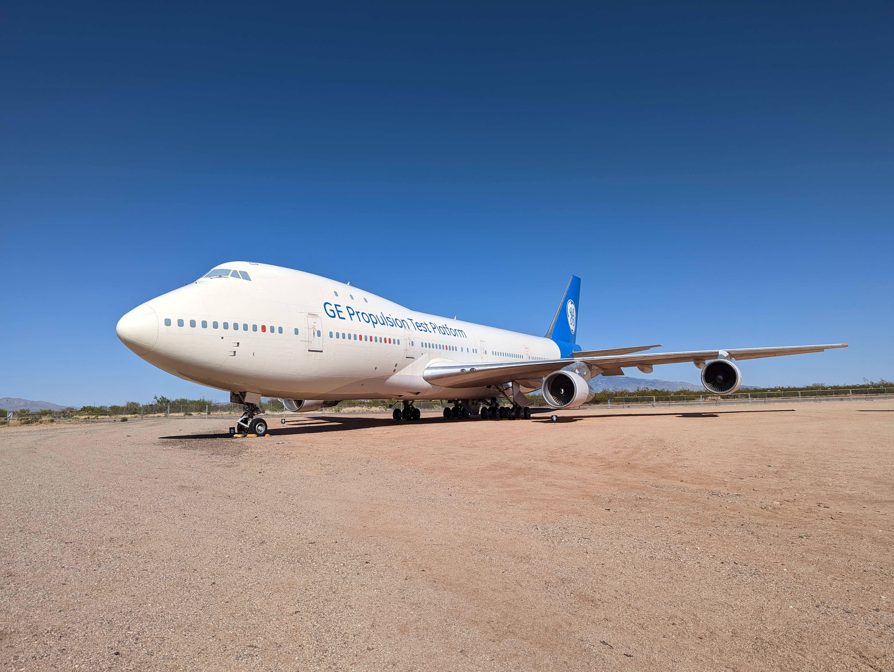
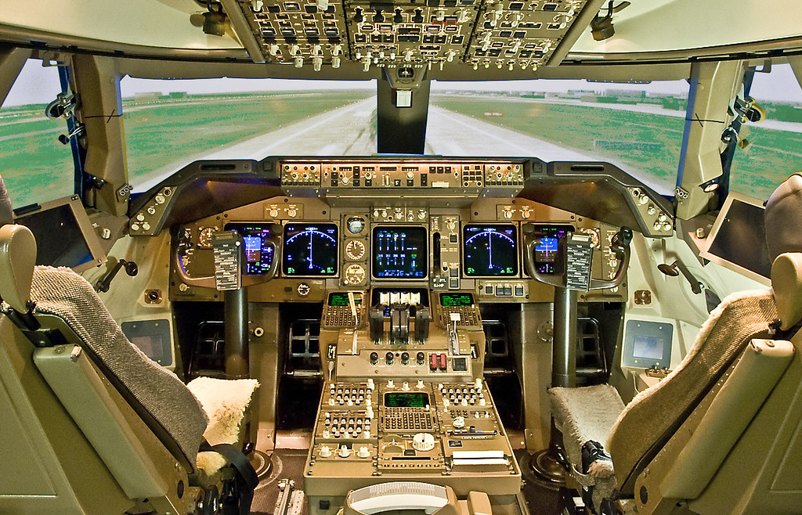

Synopsis
The Boeing 747-400 is a four-engine, wide-body commercial airliner that was introduced in 1989. It is the fourth version of the original 747 and features several improvements over its predecessors. The 747-400 can carry up to 660 passengers and has a range of over 13,500 kilometers, making it suitable for long-haul flights. The aircraft's spacious cabin and multiple decks allow for a variety of seating configurations, including first class, business class, and economy class. The 747-400 features advanced avionics and flight systems, including autopilot and digital displays, which improve efficiency and safety. The aircraft's four engines provide reliable and powerful thrust, allowing it to operate in a range of environments and weather conditions. The 747-400 has been used by airlines around the world for both passenger and cargo transport, and has undergone updates and upgrades over the years to remain relevant in the competitive commercial aviation market.
Design
design of the Boeing 747-400 is iconic, with its distinctive hump at the front of the aircraft and its four engines mounted on the wings. The aircraft's wide body and multiple decks allow for a spacious cabin that can accommodate a large number of passengers. The 747-400's wingspan is over 64 meters, and its tail stands at a height of almost 20 meters, making it one of the largest commercial airliners in the world. The aircraft's cockpit is located on the upper deck, which provides a better view of the runway during takeoff and landing. The 747-400 is also equipped with advanced avionics systems, including digital displays and autopilot, which allow for greater precision and safety in flight. Overall, the design of the 747-400 prioritizes spaciousness, reliability, and versatility, making it a popular choice for airlines around the world for both passenger and cargo transport.

GE 747 Testbed
The picture at the top of the page is of the GE 747-400 testbed whitch is a modified version of the Boeing 747-400 that is used for testing new aviation technologies and engines. The aircraft has been extensively modified with special equipment and instrumentation to allow for testing of various systems and components. One of the most notable modifications is the installation of a large pod on the left wing that houses a General Electric CF6 engine, which is used for testing new engine technologies. The testbed is also equipped with specialized data acquisition systems that allow for detailed analysis of flight data and engine performance. The GE 747-400 testbed has been used for a range of tests, including the development of new engine designs, testing of advanced materials, and evaluation of new flight control systems. The testbed's unique capabilities have made it an important tool for advancing aviation technology and improving the safety and efficiency of commercial aircraft.